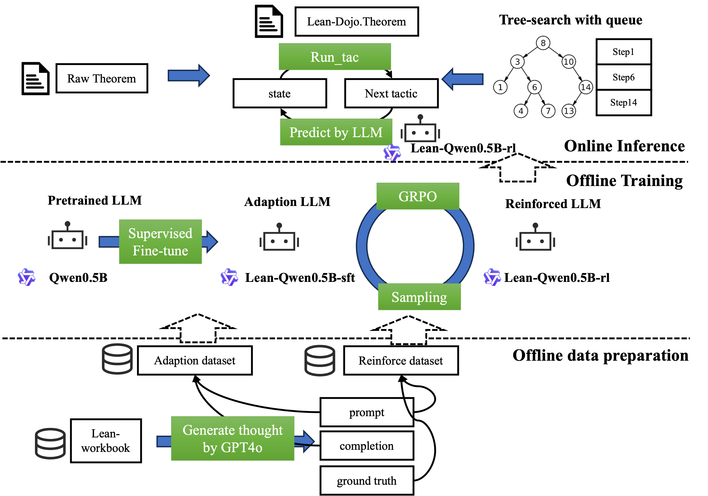
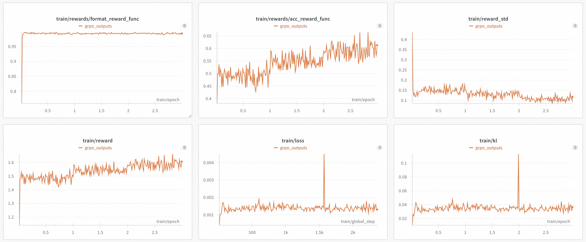

Reinforced Large Language Model is a formal theorem prover
LLM-based Lean theorem provers are usually fine-tuned directly from general base models, which limits their performance. The work asks whether reinforcement learning can improve next-tactic prediction for formal proving in Lean 4.
Lean-workbook samples are augmented with GPT-4o-generated chain-of-thought explanations of the ground-truth next tactic. A two-phase pipeline first applies supervised fine-tuning (the adaption phase) to Qwen2.5-0.5B. It then runs GRPO reinforcement learning with accuracy and format rewards, comparing rolled-out tactics against the ground truth. At inference time, a modified LeanDojo handles interaction with Lean, and tree search is adapted from InternLM.

On a 30-problem miniF2F subset, the RL model reaches 43% accuracy versus 36% for the SFT-only model. On the training set, accuracy rises from 49% to 61%.

| Model | #Positive on miniF2F | Acc on miniF2F | Acc on Trainset |
|---|---|---|---|
| Lean-qwen0.5B-sft | 11 | 36% | 49% |
| Lean-qwen0.5B-rl | 13 | 43% | 61% |